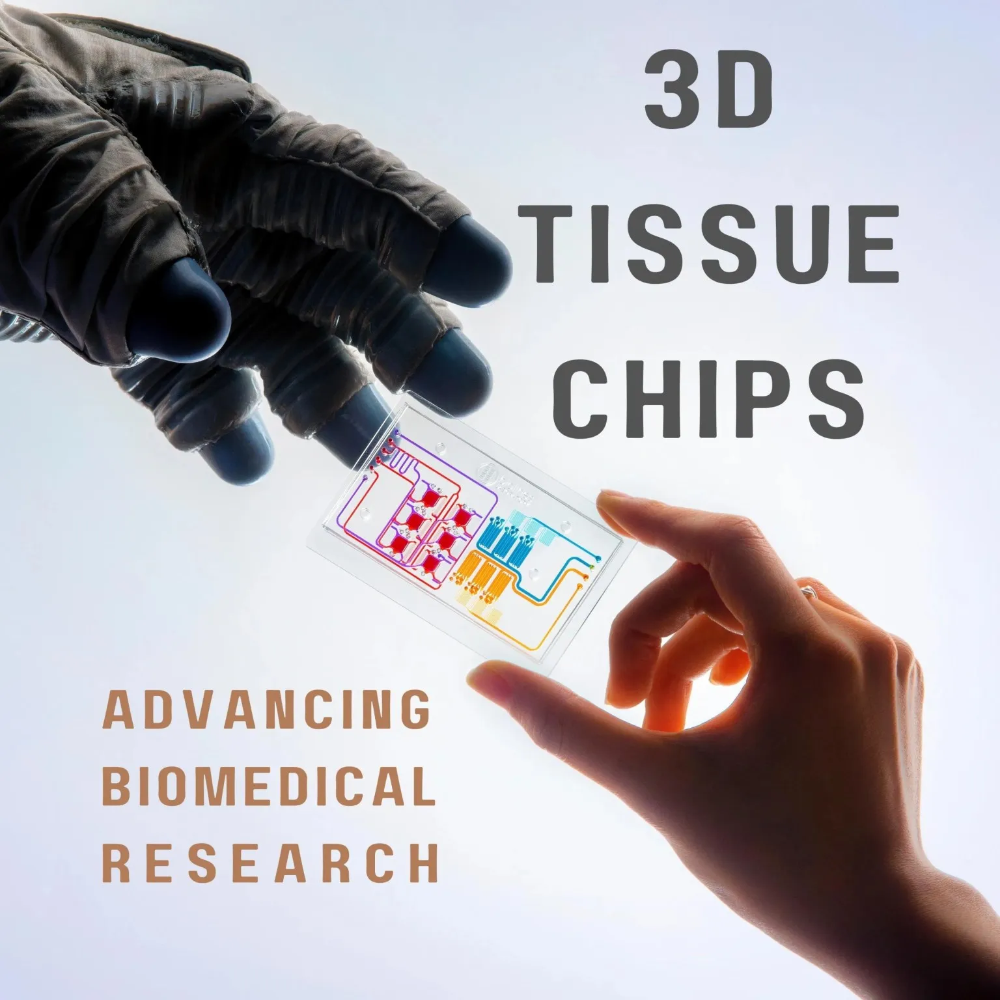

Mission of the Day: NASA's 3D Tissue Chip Research
In the microgravity conditions of space, human physiology
experiences unique changes, necessitating innovative approaches to
health monitoring and medical treatment. NASA's groundbreaking 3D
tissue chip project is at the forefront of space health
technology, offering miniature platforms that mimic the structure
and function of human organs. These tissue chips are designed to
provide insights into cellular responses during spaceflight,
enabling researchers to study potential health issues astronauts
might face.
The tissue chip technology developed through collaborations
between NASA and other research entities is vital for personalized
astronaut healthcare in space. By analyzing individual responses
to microgravity, this research aids in the customization of
medical interventions, potentially transforming how medical care
is administered during long-term space missions. The ability to
tailor countermeasures and create personalized medical kits is a
significant step forward in ensuring the well-being of astronauts
as they venture deeper into space.
While the primary aim of tissue chip technology is to support
health in space, its applications on Earth are equally promising.
These chips are at the cutting edge of biomedical research, with
potential uses in modeling diseases, developing new drugs,
designing clinical trials, and understanding the impact of
chemical and environmental exposures. As a new frontier in human
cell-based research, 3D tissue chips offer a method to identify
and mitigate the toxicity of therapeutic candidates early in the
development process, enhancing the safety and efficacy of medical
treatments for everyone.
Dive into NASA's mission to harness 3D tissue chip technology for space and beyond, ensuring that the final frontier is safe for those who explore it and beneficial for all of humanity back on Earth.
 Learn more about 3D tissue chips